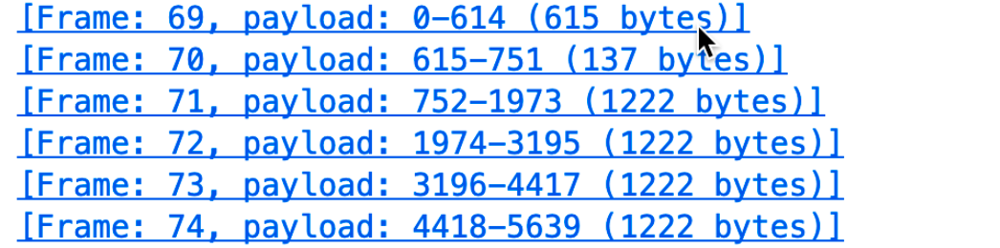
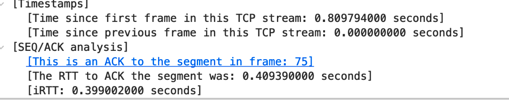

在本实验中，我们将详细研究著名的 TCP 协议的行为。 我们将通过从您的电脑向 远程服务器传输一份 150KB 的文件(一份 Lewis Carrol 的“爱丽丝梦游仙境”文本)，并分析 TCP 传输内容的发送和接收过程来实现。 我们将研究 TCP 对序列和 确认号的使用，以提供可靠的数据传输;我们将看到 TCP 的拥塞控制算法 – 慢启 动和拥塞避免 – 在过程中，我们将看看 TCP 的接收器发送流量控制的机制。 我们还将简要地观察 TCP 连线的设置，我们还会研究计算机和服务器之间 TCP 连线的性能(吞吐量和往返时间)。
A first look at the captured trace
-
将文件传输到 gaia.cs.umass.edu 的客户端计算机使用的 IP 地址和 TCP 端口号是什么?
-
gaia.cs.umass.edu 的 IP 地址是什么? 在哪个端口号上发送和接收此连接的 TCP 段?
Client IP Addressee: 10.51.172.226 Client Port: 61084
gaia.cs.umass.edu IP Address: 128.119.245.12
- 客户端计算机将文件传输到 gaia.cs.umass.edu 所使用的 IP 地址和 TCP 端口号是多少?
Client IP Addressee: 10.51.172.226 Client Port: 61084
- 用于在客户端计算机和 gaia.cs.umass.edu 之间启动 TCP 连接的 TCP SYN 段的序列号是什么? 标识为 SYN 段的段有什么功能?
如图, SYN序列号为4095602682, 标识为SYN的segment用于建立TCP链接
- gaia.cs.umass.edu 发送给客户端计算机以回复 SYN 的 SYNACK 段的序列号是多少?
2017202044
SYNACK 段中的 Acknowledgment 栏位的值是多少?
为4095602683
观察到除了 SYN 标志位，ACK(Acknoledment)标志位也设 1，意思服务器接收到我约连按请求并且发 SYN-ACIK 确认，这是三次握手的第二步。
Gaia.cs.umass.edu 是如何确定此 Acknowledgment 的数值的?
收到的$$seqence number + Len.$$
在将段标识 为 SYNACK 段的段在连线中有什么功能?
用于建立链接, 是三次握手的第二次, 表示同样连接请求
- 包含 HTTP POST 命令的 TCP 区段的序列号是多少?
如图为4095602683,TCP PSH 字段设为1表示要传送数据. HTTP的POST方法借助于TCP提供的服务实现, 在TCP中表现为TCP的PUSH字段设为1.
- 将包含 HTTP POST 的 TCP 区段视为 TCP 连接中的第一个区段。在这个 TCP 连线中前六个 TCP 区段的序列号是什么(包括包含 HTTP POST的段 每区段发送的时间是什么时候? 收到的每个区段的 ACK 是什么时候?
鉴于发送每个 TCP 区段的时间与收到确认的时间之间的差异，六个区段中每个区段的 RTT 值是多少?
如图是前6段的信息:
第一段Frame1:
(发送第一个frame,在 Wireshark中序号为frame69,这是Wireshark捕获到的序号, 由于这是发送数据的第一帧记frame1)
RTT:
note: 这里的Timestamps是Wireshark提供的额外的功能, 和TCP段Optionfields 里的Timestamps不同.
通过Wireshark的分析, 可以知道IRTT(initial RTT 表示握手阶段的RTT)为0.39900200s
ACK(对第一个frame)的ACK
发现这里的ACK number = 4095603435, 而seq1 的Next sequence = 4095603298, 而恰好, frame2的Next sequence = 4095603435
所以这是对frame1和frame2的累计确认, 这是因为TCP 采用了延迟到ACK(delay ACK), 具有所期望的序号报文到达时, 等待一段时间(通常为40ms), 如果下一个按序报文到达, 立即发送单个累计ACK, 以确认两个按序到达的报文段. 如果下一个按序报文段没有在这个时间内到达, 则发送一个ACK.
我们继续观察第一个报文段段Timestamps字段的值:
对比ACK1的Timestamps:
可以发现, 第一个报文段的TSval和ACK1的TimestampsTSerc相等, 进一步验证了之前的说法, 当接受到连续两个按序到达的报文时, 用于回复的ACK报文段段TSerc值的最早接受到的报文段的TSval, 这是为了对方更够更好的估算RTT.
时间戳选项主要的功能有两个：
-
用来计算往返时间RTT。
发送方在发送报文段时把当前时钟的时间值放入时间戳字段，接收方在确认该报文段时把时间戳字段值复制到时间戳回送回答字段。因此，发送方在收到确认报文后，可以准确计算出RTT。时间戳是一个单调增长的值，接收方只需要回显收到的内容，因此是不需要关注时间戳的单元是什么，也不需要连接双发的时钟同步。
-
PAWS:防止回绕的序号。
我们知道序列号只有32位，而每增加2^32个序列号后就会重复使用原来用过的序列号。假设我们有一条高速网络，通信的主机双方有足够大的带宽用来快速的传输数据。例如1Gb/s（TCP 的窗口经过窗口缩放可以最高到 1GB（2^30)）的速率发送报文段，则不到35秒钟数据字节的序列号就会重复。这样对TCP传输带来混乱的情况。这种情况之出现在高速链路上。而采用时间戳选项，可以很容易的分辨出相同序列号的数据报，哪个是最近发送，哪个是以前发送的。
接着我们观察ACK1报文的ACK分析(由wireshark提供), RTT为: 0.40989700s
第二段:
我们直接去找, 收到的第二个ACK报文
对比sequence的值, 可以发现, 这是对frame75的ACK, 也就是, 收到了对第七个报文段的ACK. 说明服务器已经收到了第七个报文段以及之前的报文.
我们还发现, 收到了一条[Windows Update]的报文, 这是TCP的流量控制, 用来告诉发送端根据这个值适当的调节发送速率.
根据wireshark的分析, 可以知道, RTT为0.409390000s
第三段:
第四段:
第五段:
第六段
收到每个 ACK 后，EstimatedRTT 值(参 见本节中的第 3.5.3 节，第 242 页)是什么?
假设第一个 EstimatedRTT 的 值等于第一个区段的测量 RTT，然后使用课本第 242 页的 EstimatedRTT 公式计算所有后续区段。
-
What is the length of each of the first six TCP segments?4 前六个 TCP 区段的长度是多少?

-
What is the minimum amount of available buffer space advertised at the received for the entire trace? Does the lack of receiver buffer space ever throttle the sender? 对于整个跟踪包，收到的最小可用缓冲区空间量是多少? 缺少接收缓冲区空间是否会限制发送方传送 TCP 区段?
大部分Win都是很大的值, 太多包了, 懒得分析了.通过检查此跟踪，发送器永远不会因为接收器缓冲区空间不足而受到抑制。
-
Are there any retransmitted segments in the trace file? What did you check for (in the trace) in order to answer this question?
在跟踪文件中是否有重传的段? 为了回答这个问题，您检查了什么(在跟踪包中)?观察序列号的变化:
可以发现, 序列号一直在增加, 所以没有重传的段.
通常到收到了不同的两个冗余ACK, 但这不一定意味着丢包, 这是因为分组乱序到达接受方导致的.
-
How much data does the receiver typically acknowledge in an ACK? Can you identify cases where the receiver is ACKing every other received segment (see Table 3.2 on page 250 in the text).
接收方通常在 ACK 中确认多少数据? 您是否可以识别接收方每隔一个接收到的区段才发送确认的情况(参见本文第 250 页的表 3.2)按照表3-2的说明, 接受方最多确认两个段, 但是观察了捕获结果, 发现很多事确认了超过两个段段情况, 比如在下图中, 收到的第一个ACK确认了69,70两段. 这是一次典型的delay ACK
但是观察收到的第二个ACK, 是对75段及之前段的累积确认, 这同时累积确认了71,72,73,74,75这五个段. 且观察后续的ACK, 除了在上一问题上出现的冗余ACK外, 无其他冗余ACK.
如果严格按照表3-2的叙述来看, 这只可能是部分ACK丢失导致的, 这就意味着网络拥塞, 但很明显这是不可能的, 因为没有发现任何一个重传的段, 网络很通畅.
让我们问问万能的chatGPT吧:
最多可以合并2~5个报文段哦!!! chatGPT yyds!

-
What is the throughput (bytes transferred per unit time) for the TCP connection? Explain how you calculated this value.TCP 连接的吞吐量(每单位时间传输的节数)是多少? 解释你如何计算 这个值。
TCP吞吐量的计算在很大程度上取决于平均时间段的选择。作为一种常见的吞吐量计算，在本问题中，我们选择平均时间周期作为整个连接时间。然后，该TCP连接的平均吞吐量被计算为总数据量与总传输时间之间的比率。可以通过第一个TCP数据段的序列号和最后一个确认确认的序列号之间的差来计算发送的总数据量。
最后一个由我发给服务器的最后一个ACK的seqence numerber为4095755619, 我发送的报文段第一个序列号为: 4095602682
所以接受方的接受到的总数据为: 4095755619- 4095602682 = 152936Byte

总传输时间为5.455830-0.026477=2.50933秒。
因此，tcp连接的吞吐量计算为152936/2.50933=60946.945997537191202B/s = 60KB/s。

图由wireshark产生
4tcp-ethereal-trace-1 跟踪文件中的 TCP 区段都小于 1460 节。 这是因为收集跟踪 的计算机具有以太网卡，该最大 IP 数据包的长度限制为 1500 节(40 节的 TCP / IP 报头数据和 1460 节的 TCP 有效负载)。此 1500 节值是以太网允许 的标准最大长度。 如果您的跟踪包内容指示 TCP 区段长度大于 1500 节，并且 您的计算机使用以太网连接网路，则是 Wireshark 报告了错误的 TCP 区段长度;它 也可能是只显示一个大的 TCP 段而不是多个较小的区段，而您的计算机确实可能 正在发送多个较小的区段，这可以由收到的 ACK 区段来证明。 报告的区段长度的 这种不一致是由于以太网驱动程序和 Wireshark 软件之间的交互作用所导致。 如果 您有这种不一致情形，我们建议您使用本文所提供的跟踪文件来执行本实验的分析 内容。
TCP congestion control in action (TCP 拥塞控制)
现在让我们检查从客户端服务器的每单位时间发送的数据量。 而不是(繁琐 地!)从 Wireshark 窗口中的原始数据计算这些数值，我们将使用 Wireshark 的 TCP 图形工具 – 时序图(Stevens) - 来绘制数据。
-
使用时序图(Stevens)绘图工具查看从客户端发送到 gaia.cs.umass.edu 服务 器的区段的序列号与时间关系图。您能否确定 TCP 的慢启动阶段的开始和 结束位置，以及拥塞避免接管的位置? 评论测量数据与我们在文本中研究 的 TCP 的理想化行为的不同之处。
计算每轮发送的段数量分别为: 12,17,36,87 呈指数增长, 一只在慢启动阶段.